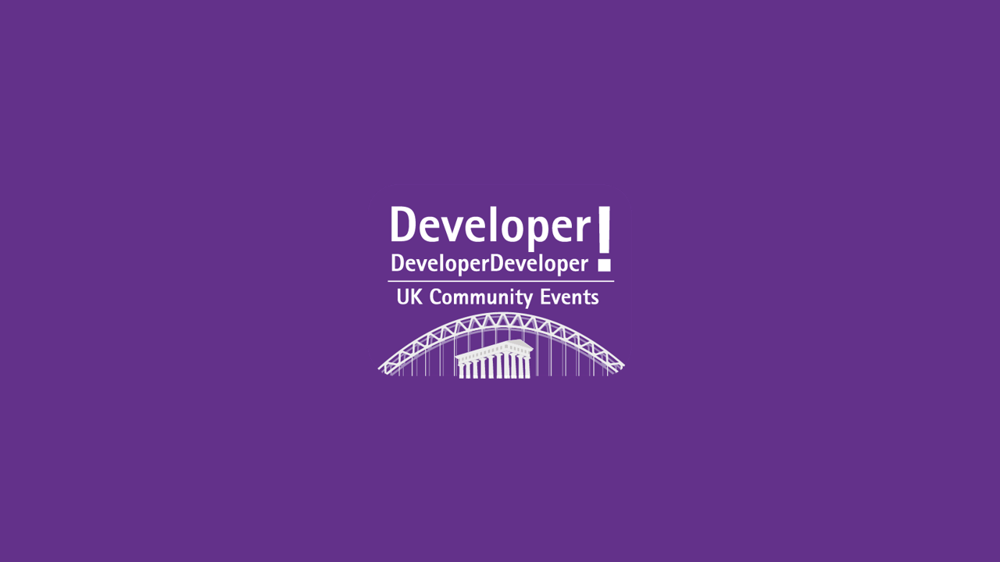

DDD North 2024
DDD North held at the University of Hull on 2nd March 2024 attracted speakers and attendees from all around the country, and some from outside the country! There were many sessions covering a wide variety of subjects along with an opportunity to network with fellow developers and so much more!
Introduction to StereoKit Mixed Reality Development - Lee Englestone
Lee Englestone works for Avanade and is the Developer Relations lead there and an MVP in Developer Technologies and Mixed Reality and have written a book .NET Developer's Guide to Augmented Reality in iOS and they have also done other talks on Generative AI.
A few years ago Oculus before they got acquired by Meta released the Oculus 2 headset and got the widest adoption, probably because you could play games, light smashing blocks with light sabres but after playing with it for a few months you put it away. They then heard about using C# and Visual Studio to create XR experiences for Meta Quest Headsets. StereoKit is still being developed despite the teams behind Mixed Reality in Microsoft being reduced.
StereoKit at stereokit.net is a mixed reality framework for Visual Studio and C# and it supports OpenXR and can deploy it with minimal changes to Quest 1, Quest 2 or even HoloLens. StereoKit also supports hands & controllers, it has more of a productivity focus so it would not be the choice for a game but has support for windows and controls in a virtual space. It has been built with minimal code in mind. You can also deploy to a simulator and when ready can then deploy to a headset and it is quick to deploy code to either a headset or simulator, Unity for example does take longer to build and deploy.
StereoKit supports hands with interfaces along with inking and windows with controls and can command things to come towards you, it can also support 3D models and physics along with lighting sources that can be reacted to along with file system access.
You will need to install the .NET Multiplatform UI workload for Visual Studio along with Android SDK and will need to enable developer mode on the Headset in the Oculus app which is in the headset settings and need to allow USB debugging so Visual Studio can access the device, you also need to install the Microsoft .NET SDK along with the StereoKit templates then it is very simple to create a project, you need to name the folder to get the name of the project using the dotnet new sk-multi which will contain the C# code and the code to deploy it to the headset in two projects. If you start the project this will launch the simulator but if do everything correctly you can also see the headset itself as a target.
SideQuest VR is recommended which will allow you to access the filesystem and stream things from the headset such as to OBS or YouTube and you can sideload APKs and can toggle certain developer settings. Simulator is easy to use, and you can navigate with ASDW keys and can use mouse to grab things like you would with your hand. After the first time you run your application it is there to be ran at any time on your headset so it can be run standalone without needing to be connected to Visual Studio.
You can write minimal code in StereoKit my just using a few lines of code to initialise StereoKit and then have a Run method runs every frame for example to create a 10 CM cube using 0.1f. A lot of thought has been put into the structure of the framework, you can use if to combine a declaration and event handler for something like a button really easily. When writing WIndowBegin you need to call WindowEnd to display a window which needs a unique ID and will be the title and then pass in the pose which is a combination of the angle and position of the window and then can have the window itself be visible or not. Controls can support Unicode and there are also built in keyboards for the text controls that are used and can also use a Hand Menu which can be interacted with for either hand or both.
Meta Quest 3 supports Full Colour Passthrough, the Meta Quest 2 had grainy passthrough but the later one is better, you can toggle between both unlike with HoloLens which is stuck with just augmented reality experiences. You can enable Passthrough and have a Stepper instance to do this. There is also support for Inking in 3D space which draws a bunch of lines in 3D space but can use this for different things.
If you have a Quest 2 or Quest 3 then you can try it out!
Supercharge your data with Azure AI Search and OpenAI - Pete Gallagher
Pete Gallagher is a full stack manager at Avanade which is part owned by Microsoft and Accenture and is a Microsoft Certified Trainer and Microsoft MVP and they organise .NET Notts. Their background is electronics and IoT but is difficult to miss AI and it is part of everyone's job now and they are also a STEM ambassador.
Large Language Models are trained onto a lot of information but not your own data. What is Generative AI which is a deep prediction model and will be talking about LLMs such as Gemini which has been in the new recently or OpenAI's ChatGPT and there are models such as GPT 3.5 Turbo and DALL-E etc.
Azure OpenID has the same models as OpenAI ChatGPT but get security, virtual networks and private links and can have responsible AI, which is opinionated as will be limited in what way you will get data back, may not be able to ask certain questions. Microsoft and Avanade are investing into responsible AI. Azure Open AI has a multi-language SDK supported.
A World of Unstructured Data - Text, images, video, audio etc and have AI model training and powerful prediction engines, you ask a question, and it says what the next possible token is something but doesn't know what the next one is until it says it. We need a way to being our own data into these models.
Retrieval Augmented Generation - We can bring our own data to the LLMs, so query based on User Query, get responses back from database and combine this with query with AI reponse and add this to the LLM.
Azure AI Search - Need a way to break down the data known as Chunking. Azure AI Search allows you to query your data in different ways such as text, fuzzy and vector searches on this and has a multi-language SDK so don't have to use API calls. Indexes are like a database table with schemas and fields and can set a field to be filterable and can apply a facet which is all the options for a field to populate something like a drop-down box and query over this data. You can do a full-text search, vector search and hybrid search to improve ranking of results by combining mathematical search with semantic search and can do a semantic re-ranker which can rank results better to better understand what you actually want.
Vector Embeddings - Convert unstructured data to numbers that AI models that can then work over, to work out the meaning of the data. Created using an AI embedding model to create a Vector Database which are designed to do vector comparison and then compare two sets of vectors and can compare these with complex mathematics to see how close the numbers that represent different parts of the data to see if things are similar. Vectors understand the semantic meaning of your data and figure out how close things are mathematically e.g. King - Man + Woman = Queen, so you get another vector and can convert this back to text for the output. Another way to think about it is to use 3D space to plot the space of these words, such as a visualisation of words that you can then do a vector search of and see words that have similar semantic meaning are nearby each other.
RAG in Detail - We have a front end and we connect to that to an API and connect to services such as Azure Search and Open AI, the user uploads a document which is broken up with chunking and vectors are created from the document and then can search for information using the vectors to then obtain a response based upon those documents.
May the Forms Be With You: A New Hope with Blazor Hybrid on WinForms - Don Wibier
Don Wibier works for DevExpress they are from Holland to present their talk about a new hope with Blazor Hybrid on WinForms. DevExpress are component vendor with components for WinForms, Blazor, WPF and many other languages.
There are a lot of Win Forms / WPF applications that have been developed in the past and people are looking to move forward with Blazor, Web API endpoints and other stuff. You can start using Blazor in an existing application.
There are help documents on creating a Windows Forms Blazor App, along with doing the same with Windows Presentation Foundation. You can create an application that takes advantage of a WebView3 which can be used in either a Win Forms or WPF project and you can also change your application to use dependency injection which you can get the package for this from NuGet to then set this up for the application. Then this can be used to provide functionality to the application which includes the Blazor Web View and can then either drag the WebView from the Toolbox using the Designer or can dynamically insert it into the application. Then you also need to change the project type to add Razor then add the wwwroot folder which is where the Blazor resources and assets can be placed including the Razor pages and the index.html.
Blazor Hybrid pages will be run natively on your machine and won't use WebAssembly, you can reference any CSS for any components that you are using such as the DevExpress components in the index.html and this will also include the blazor.webview.js to make sure it will work as expected. You can then include any Blazor components / files as needed including the _Imports.razor and any Blazor packages being used such as the DevExpress components can be referenced the same way as for a normal Blazor project so you can have everything you have in a Blazor project in a WinForms project.
When using the WebView with Blazor you need to use Dependency Injection there so can provide the Service Provider from the dependency injection provider used in the WinForms application along with registering any services required for any DevExpress components you may be using. Once setup you can get a Blazor application running in a WinForms application but will need to set up the Router component first rather than use the Index so this will take care of the routing used in the application but also need to make sure that you use the correct render mode for the application as interactive mode is not supported for example.
WinForms interaction with the Blazor components would be nice, so you could use some JavaScript methods to help with for example getting the width of the window for the Blazor application which can then be invoked from the Blazor application and then have a Button that will call this method to invoke the JavaScript to view the width of the window. You can also register a .NET Object Reference that can be invoked from JavaScript to call a method in C# and you can set this up from the JavaScript and have this attached on the first render of the page in Blazor.
Within the WinForms application it would be nice to navigate between items in the Blazor application so need a mechanism to connect them together as the WinForms application is merely hosting the Blazor application but not doing anything with it, so you can create a bridge which can be a class with a reference to the Blazor Layout and Main Form which can be registered as a service and register to the main form and main layout and then reference these within the bridge class so will have a single reference for both and then can communicate between the Blazor and WinForms either way with this class that is referenced from both, so you could have a local data store for the WinForms application and could expose this to the Blazor application and have it deal with this data store.
Blazor state management is also possible with Blazor Hybrid so can use a state machine that can be injected into the application to perform state management to track if the state has changed and then indicate this state or change the state for example using a CheckBox.
Take a Note of XAML with .NET 8 - Peter Bull
.NET
.NET started as .NET Framework in 2002 but now .NET is the free, modern, and unified open-source cross platform framework from Microsoft that can be used to build apps and services for Cloud, Web, Desktop, Mobile, Gaming, IoT or AI. .NET 8 is the latest version of .NET released in November 2023 and is a Long-Term Support release supported for three years until November 2026 with thousands of performance improvements across the stack from code generation to just-in-time compilation. C# 12 is the latest version of C# released alongside .NET and introduced primary constructors which allow a class to be initialised using a simpler declaration of values and Collection Expressions were also added where lists of values can be set using square brackets to common collection values.
XAML
XAML is eXtensible Application Markup Language and is an XML-based declarative markup language that can define objects with rotations, animations, or other effects along with vector-based controls using styles or templates and more. XAML allows developers to decouple the design and user interface of an application from the implementation of an application including events, business objects and other code. XAML supports databinding from source values to target properties including converting values to present data to users or to allow interaction with data from users.
XAML & .NET Platforms
XAML and .NET Platforms include Windows Presentation Foundation, codenamed Avalon, first introduced XAML in 2006 part of .NET Framework 3.0 but today is still a major part of .NET 8. Windows App SDK, codenamed Project Reunion, first released in 2021 using WinUI 3 with XAML and leverages the power of .NET 8. .NET MAUI or .NET Multi-platform App UI first released in 2022 enables cross-platform development using XAML with .NET 8.
XAML & .NET Alternatives
XAML and .NET is also supported in Uno Platform, which is a free open-source platform for quickly building polished cross-platform native mobile, web, desktop and embedded apps with .NET using a modern WinUI 3-based XAML syntax. Avalonia UI which is another open-source UI framework to create multi-platform apps with .NET for desktop, mobile, web and browser using XAML based on Windows Presentation Foundation. OpenSilver is an open-source plugin-free framework for apps with .NET that run in any browser or device using XAML based on Silverlight and Windows Presentation Foundation.
XAML & .NET Toolkits
Toolkits available from NuGet providing additional functionality for projects using .NET and XAML such as Comentsys Toolkit for .NET Standard supporting .NET 8 includes cross-platform functionality used for databinding useful in all XAML-based .NET applications. ModernWpfUI by Kinnara brings modern styles and controls to Windows Presentation Foundation although built-in support for modern controls is coming to WPF in .NET. Windows Community Toolkit is a collection of helper functions, custom controls and services for applications using WinUI 3 such as Windows App SDK. NET MAUI Community Toolkit is a collection of common elements that tend to be replicated across apps created using .NET MAUI.
Windows Presentation Foundation
Windows Presentation Foundation in Visual Studio allows developers to write XAML in the XAML View or developers can drag-and-drop controls, shapes and more to compose XAML in the Design View. Windows Presentation Foundation supports media elements such as vector and raster images along with audio and video plus can display lines or shapes with a variety of brushes. Windows Presentation Foundation allows developers to build Blazor Hybrid apps that run natively on Windows and allow UI to be re-used across different platforms.
Windows Presentation Foundation was the first platform to introduce XAML and allows .NET 8 developers to create a WPF Application that targets Windows desktop from Windows 7 to Windows 11 with the .NET Desktop development workload installed for Visual Studio 2022. One pro is that it you can more easily to modernise legacy WPF applications with .NET 8, but one con is the reputation of being part of the legacy .NET Framework.
You can find out more about getting started with Windows Presentation Foundation and more at github.com/dotnet/wpf.
Windows Presentation Foundation in modern .NET is used by IDS CryScan to create a flexible application targeting Windows 7 onwards. IDS CryScan is an application where a user scans a QR code to load Lot specific information for the IDS System.
Windows App SDK
Windows App SDK uses WinUI 3, the native UI platform with modern controls and styles that embody Microsoft's Fluent Design and XAML written in Visual Studio can updated in a running project using Hot Reload. Windows App SDK supports new APIs with implementations decoupled from Windows and converged APIs that combine the APIs from its predecessor of Universal Windows Platform or UWP with Win32 APIs. Windows App SDK allows you to create a Widget provider that can handle operations in Widgets in Windows 11 created using Adaptive Cards.
Windows App SDK is the successor to Universal Windows Platform available as the Microsoft.WindowsAppSDK NuGet package and updated every six months with XAML like Windows Presentation Foundation. Windows App SDK combined Universal Windows Platform with Win32 using WinUI 3 as the user interface layer that features modern controls that use Microsoft's Fluent Design system. Windows App SDK allows .NET 8 developers to create a WinUI 3 in Desktop application for Windows from Windows 10 1809 to Windows 11 by installing the .NET desktop development workload along with the Windows App SDK C# templates for Visual Studio 2022. One pro of Windows App SDK is that it features the latest functionality from Windows 11 available to developers, but one con is that it doesn't support Blazor Hybrid.
You can find out more about getting started with Windows App SDK and more at github.com/microsoft/WindowsAppSDK.
Apple was assisted by Microsoft to create apps using WinUI 3 on Windows with Windows App SDK including, Apple Devices to manage your iPhone, iPad or other compatible Apple devices, Apple Music to listen to music and discover more music and Apple TV to watch new TV programmes or films.
.NET MAUI
.NET MAUI in Visual Studio does not have a Design View for XAML but does support Hot Reload which means changes in the XAML View can be displayed and updated in a running project on desktop or mobile. .NET MAUI can create cross-platform apps built for performance and extensibility where can define as much of your logic and user interface as possible in one place and can even use Blazor Hybrid. .NET MAUI can use the native APIs of target platforms allowing developers define platform specific behaviours on each platform to enhance functionality for that platform.
.NET MAUI or .NET Multi-platform App UI is based on Xamarin using Mono which was first released in 2011 and then was acquired by Microsoft in 2016 to later become part of .NET as .NET MAUI. .NET MAUI uses XAML like Windows Presentation Foundation or Windows App SDK, but it has many significant differences control names, supported controls and property names. .NET MAUI allows developers using .NET 8 to create a cross-platform .NET MAUI App targeting desktop on Windows using WinUI 3 and macOS using Mac Catalyst, along with mobile on Android and iOS plius Tizen from Samsung by installing the .NET Multi-platform App UI development workload for Visual Studio 2022. One pro of .NET MAUI you can target multiple platforms not just Windows, but one con is there may be a learning curve for existing XAML developers due to the differences in .NET MAUI
You can find out more about getting started with .NET MAUI at github.com/dotnet/maui.
NBC Sports Engine allowed NBC to share code between mobile, web and APIs to deliver an app quickly to market with .NET MAUI, Sports Engine is a team management application for iOS and Android where users can schedule team related events and can check attendance for events.
Demo
XAML Notes used a Class Library that used Packages from NuGet including SQL Lite for storing Notes, extensions for dependency injection or configuration, and my own Comentsys Toolkit to provide Data Binding for the various platforms. Windows Presentation Foundation used ModernWpfUI to create a modern looking experience almost identical to that used in Windows App SDK. Windows App SDK used mostly built-in functionality but did leverage a colour helper from the Windows Community Toolkit and .NET MAUI used a cross-platform popup control provided by the .NET MAUI Community Toolkit.
Overview
.NET 8 is the latest version of .NET that was released in November 2023 and allows developers to build modern applications and services for any platform. XAML allows developers to create modern applications with decoupled user interfaces including support for data binding for interaction with values from code. Windows Presentation Foundation allows developers to build a WPF Application targeting Windows 7 to Windows 11 using XAML, .NET. Windows App SDK allows developers to build a WinUI in Desktop application using XAML and .NET for Windows 10 1809 to Windows 11 and .NET MAUI allows developers to build cross-platform applications for desktop on Windows and macOS or mobile on Android and iOS.
You can get all the slides along with a demo of XAML using Windows Presentation Foundation, Windows App SDK and .NET MAUI at github.com/rogueplanetoid/takeanoteofxaml.
Extending Copilot with Copilot Studio - Dylan Hayes
I for one would like to welcome our new robotic overlords! Dylan will be talking through Copilot Studio which is a low-code solution and how it hooks into the rest of the development stack. Dylan Hayes and recently made an MVP and is a Microsoft 365 Consultant.
A story about a hammer - there is an interesting story about Luddites, but they were very different to what you think, and they were skilled artisans and took many years to learn how to make a certain cloth very smooth and a machine was invented that made them irrelevant, they had been highly paid, and they smashed machines and burnt down factories. As technical people we see AI as a threat, if a machine came along and made you irrelevant then you may think that way. Luddites went on to become millwrights who designed new machines and many of them went on to become the people who looked after the machines that replaced them.
Microsoft is unifying end user AI under "Copilot" which is one name for everything instead of everything having a different name. There are different capabilities of a lot of these Copilots as there are any many to Copilot in different products. There is one place to extend them all, is Copilot essentially Clippy version three.
Copilot Studio was announced at Ignite 2023 and allows for Power Virtual Agents for scripted conversations around topics, generative AI features which can be glued into features of chatbots on websites or social media plus can pass along to a real person with Agent Transfer and can build custom GPTs and can be surfaced as a custom Copilot which can be experts in certain domains and can't answer other things or can have integrations with Azure Open AI along with plugins for Dataverse and Microsoft 365.
Why is this important? Data is the new oil, data is super important to what every organisation does. You can play before you pay and there are free trials for various parts including Microsoft 365, Dynamics 365 Customer Engagement 90 Day Trial, Power Automate / Power Apps, Copilot Studio with Limited trial. Can show how to add generative AI to a website for topic response and chatbot and some integration points.